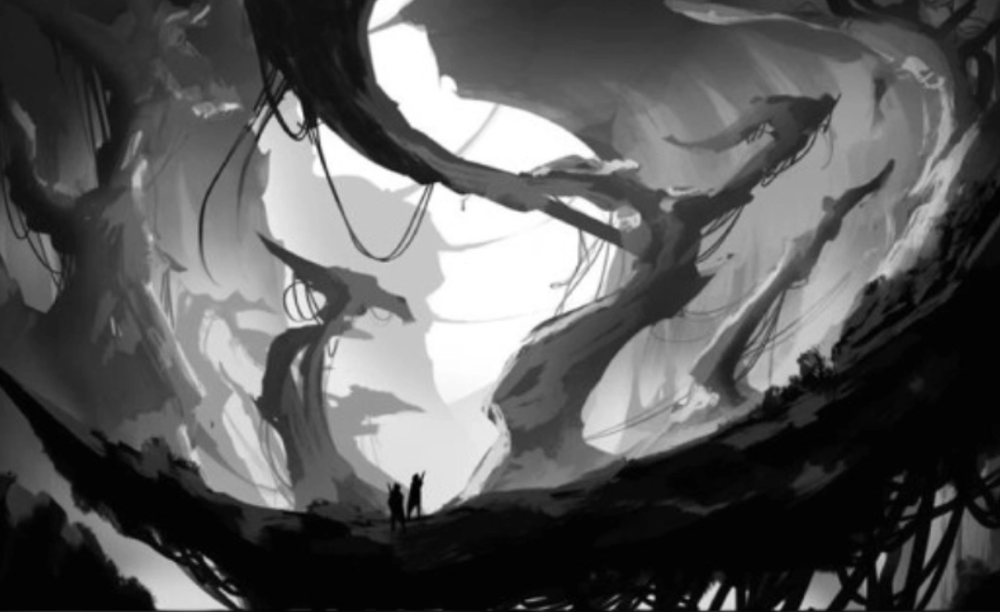

Vorace

Projet de fin d’études · En cours
Une vengeance en noir et blanc
Dans ce twin-stick shooter, Illan, un ancien soldat, cherche à venger sa famille. Les combats se déroulent dans un univers en noir et blanc.
Producer / CoordinateurPrésentation du projet
Comme producer et coordinateur, je tiens le backlog à jour et je prépare les sprints avec l’équipe. Mon rôle est de rendre les priorités visibles tout au long de la production.
Chronologie de production
Production
Finalisation
Mon travail sur le projet
- Gestion et organisation du backlog
- Préparation des sprints
- Mise en place et suivi de la méthodologie Agile
- Accompagnement de l'équipe dans l'avancement du projet
Points techniques et production
Organisation du backlog
Je regroupe les tâches de production et je les ordonne selon les priorités de l’équipe.
Préparation des sprints
Pour chaque sprint, je prépare le travail à engager et je suis son avancement.
Post-mortem
La production est en cours. Le bilan sera rédigé à la fin du projet.